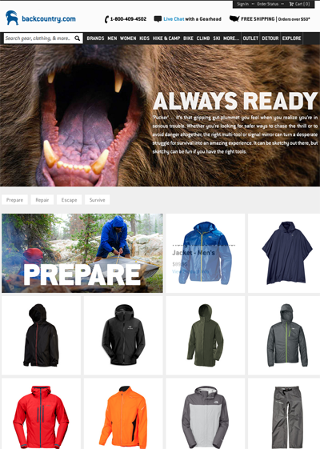
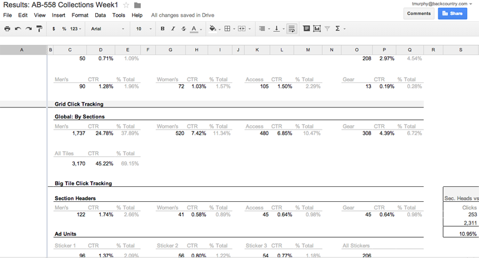
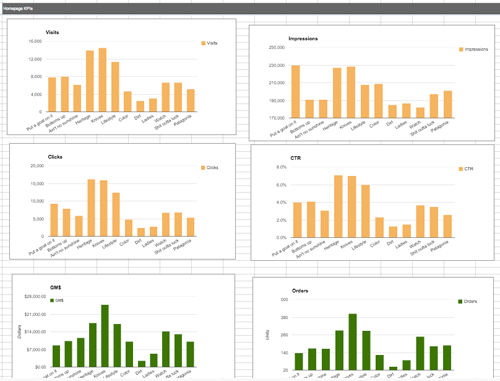
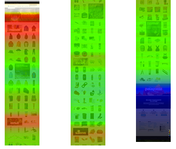
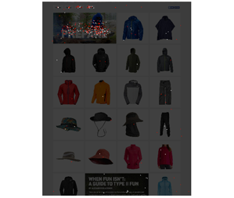
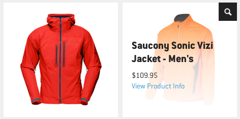
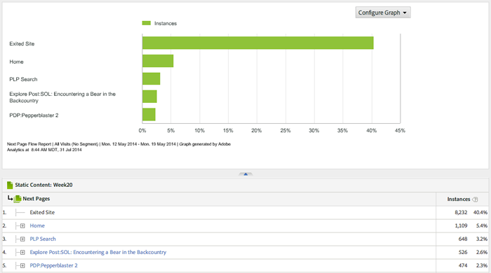

Executive Summary
Business Problem Solution Conclusion Why I chose this projectThe Process Failures
An offsite of key stakeholders Following the leader Being realistic with scale Dead end experience Don't ask the customerMy Role
Research Data gathering and analysisThe Take Aways
Projects need to mature Waiting two weeks for research The Good: UPOLow margin. Backcountry.com has experienced a long-term trend where customers are purchasing a greater percentage of lower margin products in lieu of purchasing higher margin products. These higher margin offerings could be from top brands, but it is more likely they are sold by brands which exist further out in the tail of our catalog.
Collections. A highly curated group of products organized around a theme, offered as a unique experience within Backcountry.com. The business goal was to surface more obscure brands and products that currently exist within the catalog, and preferably products selling at a higher margin. With collections focusing on these brands and products not sold by the vast majority of other outdoor retailers we realize better value.
Collections launched as a weekly program with the intent to increase cadence to twice a week and then daily. The belief was that once sufficient program awareness and perceived customer value was reached, visitors would come to Backcountry.com to consume the collection’s offerings then spill over to the retail site.
The collections program was killed after 18 weeks. In the end, almost all goals based on anticipated business hypotheses proved to be false; traffic, revenue, ability to merchandise high margin products, nor the quick adoption of shopping for outdoor gear by curated groups.
Even though certain trends were discovered during the programs run, it was nearly impossible to pivot or alter the solution set in place. Key stakeholders had little appetite to change direction from their business assumptions, curation process, or user experience errors.
Collections is not a project which points out the failure of my visual design solutions or showcases my alternative iterations. As I hope you will see, this project was one where I was trying to use a methodical approach to understand a solution which was handed to me and begin the process of improvements. I’d like to think it highlights my ability to work through workflow problems in an insightful, transparent and rational way using data and user feedback.
An outside advisor familiar with the collections model was brought in and several “key stakeholders” went off-site to brainstorm strategy, solution and execution. On the surface this sounds like a logical first step, but unfortunately the ultimate owners of the product were never included in on this process. Nor was any research brought to the table as to what customers might want or expect.
The outside advisor brought with him experiences and expectations from a failing business and customer base much different than Backcountry.com. Their business spent heavily on customer acquisition to only see these newly acquired customers purchase one low value product - so a story of high customer base but low transactions. Our model was launched with a business expectation that visitors would be enticed by past collection themes and offerings so they would be compelled to return for more. Also, page layout and workflows were mimicked with little thought as to how this would work within the Backcountry.com ecosystem.
Backcountry.com had no internal tools, systems or processes in place to create these highly curated collections as promised. From the beginning, cost considerations were ignored and quickly replaced with promises of future revenue. The manual operations and manpower necessary; to curate product, shoot photography, produce creative assets, approvals, code pages, QA, and then finally push to production was grossly underestimated.
Even though collections were considered a MVP launch, there was no consideration or forward thinking as to what it meant to take this program to the next level. How the collections program would scale to match the increase in cadence was not scoped or thought out.
Backcountry.com currently has a site navigation and focuses merchandising efforts on serving a visitor base which is very top brand centric. Therefore the only way to introduce visitors to a new product such as this is to drive traffic via promotional messaging or through email. Both methods would place a user into an experience which would be only about those individual products and to experience any more the user would abandon the collection experience.
The customer was never brought into the planning stages. Conducting research was deemed to be too time consuming and unnecessary since there was a collections expert and UX Director as part of the key stakeholders group. These individuals were to speak for the customer.
As mentioned above, the Product Manager and I were brought in only after program scoping and final designs were created and were tasked with completing the first collection within 14 days to meet a launch deadline. With no say in how the program was to work, we had to back peddle to not only build out the first collection, but to put in place a plan to collect business and user metrics in an effort to establish measurements for success or failure.
My first task was to determine if people knew about or purposely shopped curated selection. Since the term collections is not common vernacular and is somewhat of a different shopping experience, it was important to understand people’s motivations, expectations and value beliefs.
I created a survey to pre-screen people based on some basic questions around types of e-commerce site recently visited. Ads were placed in several online domains and from the pool of respondents 12 people were picked. These individuals were brought into Backcountry.com over the course of two days where I conducted more in-depth interviews.
Initially participants were asked questions pertaining to their online shopping behaviors to get a sense of their individual shopping patterns. Participants were then shown printouts of different collection centric websites and asked to provide feedback on how they would use the site, important or missing features, general value statement of quality and how the site compares to others that are being shown.
I quickly discovered a pattern that many key features expected in a collection of products; the backstory of why this collection was important, having the ability to control the products being shown (i.e., filtering, sorting) and a strong sense of relevancy all were missing in the Backcountry.com solution. Participant insights were documented and from this session the PM and I created; a report of findings, defined key metrics to track and a strategy for A/B testing.
Research findings were presented to the key stakeholders as well as suggestions on specific areas of improvement. Findings were ignored and the decision was made that the original solution was adequate.
Visitor interaction data was collected using Optimizely and CrazyEgg. Optimizely is a third party application which allows us to create and track specific page interactions while CrazyEgg was used primarily to see click distribution and scroll heatmaps. I used Omniture primarily for understanding Next Page flows and Page Exit rates.
Data gathering for the first two weeks was dedicated to tracking clicks on existing elements in an effort to understand broad usage patterns. Elements such as the white navigation bar, section artwork, product tiles, quick views and article ad units were monitored to get a sense of user engagement.
Each week that an Optimizely test ran, I put together dashboards of page interactions such as the example above. These dashboards were meant to summarize the click data and put information together in such a manner as to allow for easier comparison week to week. In addition to the click data, I created another dashboard from KPI data pulled by our BI team. This way business metrics could be visualized along side interaction data.
Scrolling is a problem we are finding not only in collections, but across our site. Finding ways to pull people down the page, inform visitors that there is content which may be of value to them below is challenging when there is so much information there. With the original design there was an assumption that all users would scan the page freely and that because information was continually entering the screen this would pull them down the page.
CrazyEgg tests showed two key metrics; (1) that we have approximately 95% of viewers hit a space of 800px space around the main promo banner, and (2) that there is banding at the beginning of each section. With the scroll heat map below you can see that users are not consuming the page in total, a contradiction to the assumption.
Since our visitors were seeing a small fraction of the page, most of which was filled with promotional imagery they were viewing little of the section navigation and usually no product. The first A/B test run was an experiment in reducing the height of the promotional imagery to bring navigation and product up into the 800px viewport. This decrease in promo image height resulted in a 7.3% increase in navigation usage.
Banding at each section is a result of two factors. Email campaigns deep linked visitors directly to a section header and navigation clicks also sent users here. Therefore it is logical that this heat map condition would exist but it also clearly indicates users did not stay long.
Even though the design solution provided visitors a way to jump to areas of interest on the page, section navigation, we found the element was not used very much. Visitors were more apt to click on large section images than explicit navigation even though these images had no call to action nor provided any hint as to where the click would take the user.
Unfortunately this insight was never put in front of users for 1-1 conversations to better understand this behavior. My only insight was through A/B testing the inclusion of CTAs on section header images. Tests did show a 10.5% reduction in clicks with CTA messaging so it was inferred that informing visitors reduced the click.
The original solution had a tile interaction where only the product image was displayed on default and then on hover the visitor would see product title and pricing information. From this state the visitor could click through to get to a detail page with all the product information.
In my opinion this was a problematic interaction for two main reasons. First, in early research we heard from participants that hiding the price on initial display gave the feeling that the products would be very expensive (“What are you trying to hide?”). Secondly, the interaction is odd in that the product the visitor has shown interest in we cover the product image with text. We know from previous tests that users are drawn to image so covering the important element is odd.
I ran an A/B test where we showed the product information by default. This was a less than ideal test since from the start we were hiding valuable product imagery behind the panel, but we wanted to see if displaying changed behaviour. The version with product info shown by default decreased clicks across all page elements; header, page navigation, and product. Unfortunately, it was difficult to interpret results with such a poor layout - were decreases due to an unappealing page layout or were the products no compelling offers and knowing this beforehand decrease interaction?
Given the low progress to product and consistent high exit rate there should have been more time dedicated to 1-1 user feedback or willingness to adopt findings from the original research.
My hypothesis is that we put a lot of burden on the visitor to find something they were looking for. From asking them to scroll long pages, hover on product tiles to find basic information, then having to click through to detail pages to discover if the products came in color or sizes for them was just too much to ask.
As mentioned earlier, collections was terminated as a project and I was rotated off. I felt like as a team we were just beginning to understand the dynamics of the program and were in a position to begin making meaning change. When in the thick of planning and building time seems extremely compressed and that pausing to evaluate feels like wasted effort, but again and again I have seen that learning takes time and that if their is a collective understanding that progress can be made the patience can pay off. In this case that unfortunately did not happen.
My biggest regret was that I was unsuccessful in changing opinions early on with research findings. Even though being brought into the project post planning, my hope was that conducting research and pointing out potential flaws could alter the course set. It seems conducting research is rather easy, but the changing of opinion is not. There is always a reluctance to step back from assumptions made about a program once group consensus has been made. We all fall into this trap, myself included, and finding better ways to influence key stakeholders is a skill that I work on all the time. Obviously in this project I was not successful.